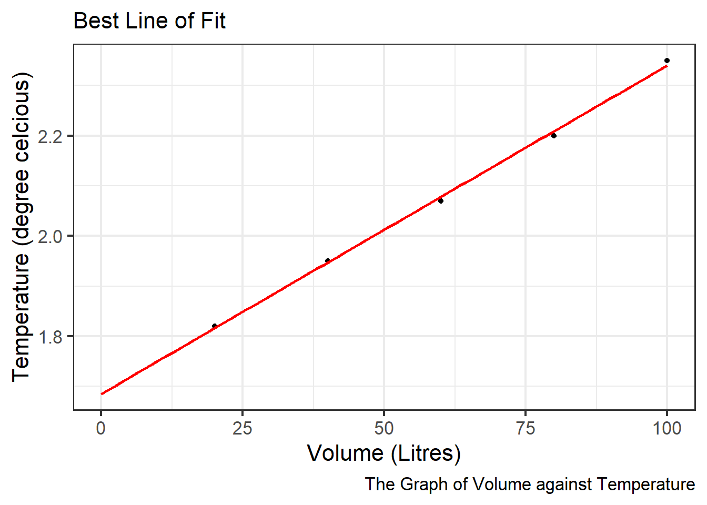
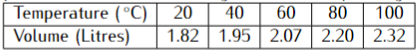
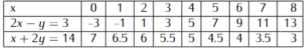
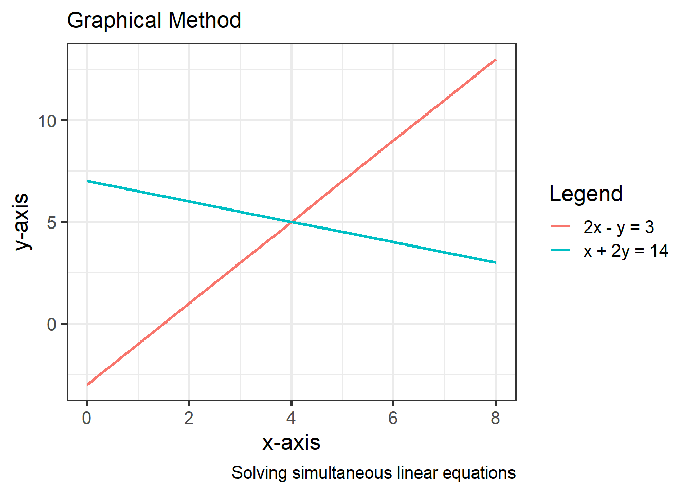
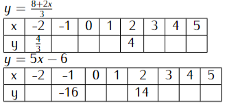

Chapter 15: Co-Ordinates and Graphs
Co-Ordinates and Graphs
A coordinate is an ordered pair of numbers used to locate the position of a point in a plane and written in the form (x, y). The first number, x represents the distance along the x-axis and it is called x the coordinate. The second number, y represents the distance along the y-axis and it is called the y coordinate.
The x and y axes divide the plane into four regions and each region is called a quadrant. The quadrants are named 1st quadrant, 2nd quadrant, 3rd quadrant, and 4th quadrant starting with the top right-hand quadrant and moving in anti-clockwise direction.
Rectangular Cartesian co-ordinate system is a system of locating points using two axes at right angles.
We can also use coordinate systems such as latitude and longitudes and grid references to locate places on the earth’s surface.
Solved Examples
Example 1
A certain quantity of gas is heated from \(0\,^{\circ}\mathrm{C}\), and the volume is measured at different temperatures. The table below gives the corresponding values:

a) Draw a graph of volume against temperature using a suitable scale.
b) Use your graph to find:
i) The initial volume of the gas
ii) The volume of the gas when the temperature is \(50\,^{\circ}\mathrm{C}\) and \(64\,^{\circ}\mathrm{C}\)
iii) The temperature of the gas when the volume is 1.9 litres and 2.3 litres.
Solution
a) The graph is depicted in the figure 15.1:
i) The initial volume is obtained by extrapolating the line to cut the y-axis. Therefore the initial volume is 1.7 litres.
ii) The volume of the gas at \(50\,^{\circ}\mathrm{C}\) is 2 litres
The volume of the gas at \(64\,^{\circ}\mathrm{C}\) is 2.1 litres.
iii) The temperature of the gas at 1.9 litres is \(35\,^{\circ}\mathrm{C}\)
The temperature of the gas at 2.3 litres is \(98\,^{\circ}\mathrm{C}\)
Example 2
Solving simultaneous linear equations using graphical methods
\[\begin{equation} \begin{split} 2x-y&=3 \\ x + 2y &= 14 \end{split} \end{equation}\]
Solution


The solution of the two simultaneous equations is at the point of interception as displayed in the figure above: From the graph, the values of x and y are: \(x=4\) and \(y=5\)
Problems to solve
- a) Use a graphical method to solve the following simultaneous equations: \((7mks)\)
b) If the lines cut the y-axis at points P and Q respectively,
Write down the co-ordinates of the points P and Q.(3mks)-
Copy and complete the tables below for:
a) The linear equations \(3y=8+2x\) and \(y=5x-6\) respectively. (4mks)

b\) On a graph paper and on the same grid draw the two linear
equations in (a) above. (4mks)
c\) What is the nature of the two graphs you have drawn? (1mk)
c\) Use your graphs to solve the simultaneous equations.(1mk)